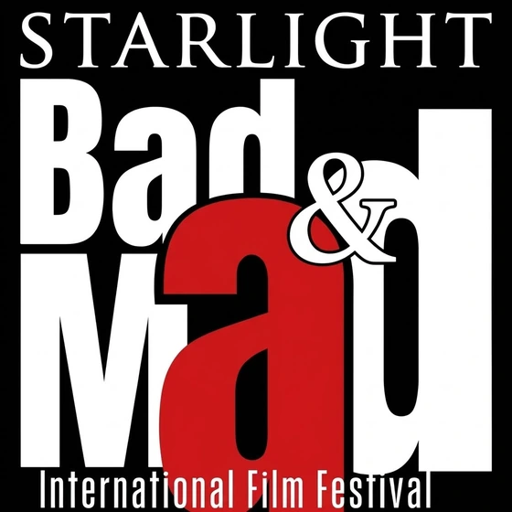

Catania · Accademia Ardizzone Gioeni
Il cinema che osa
Un festival internazionale dedicato alla commedia non convenzionale, all’umorismo nero e al cinema dell’assurdo.
Scopri il programmaIl manifesto
Il Bad & Mad International Film Festival dà spazio alle opere che esplorano la comicità attraverso il paradosso, il grottesco e la satira. Il festival mette in dialogo il cinema italiano e quello internazionale all’Accademia Ardizzone Gioeni, nel cuore di Catania.
Il programma riunisce lungometraggi, cortometraggi, documentari e animazione. Alle proiezioni si affiancano incontri e sessioni di pitching, con occasioni di confronto tra autori, pubblico e professionisti del settore.